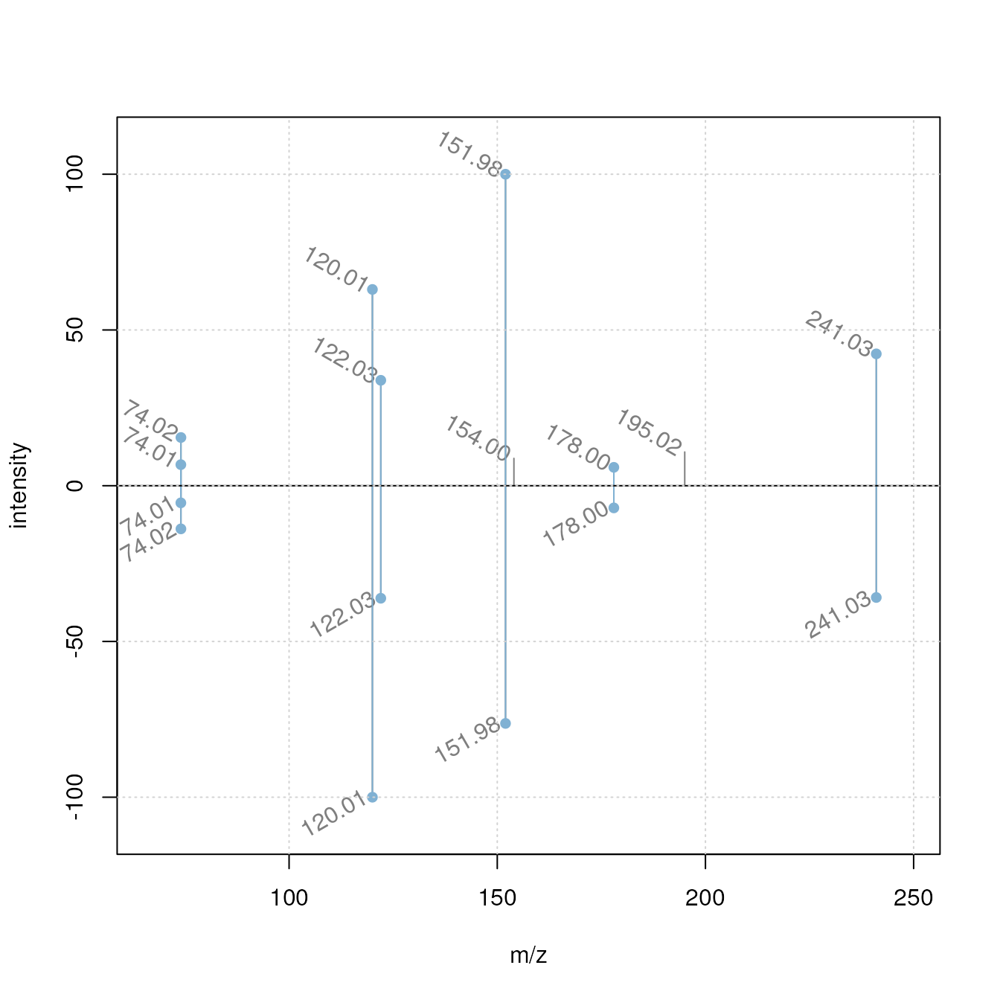
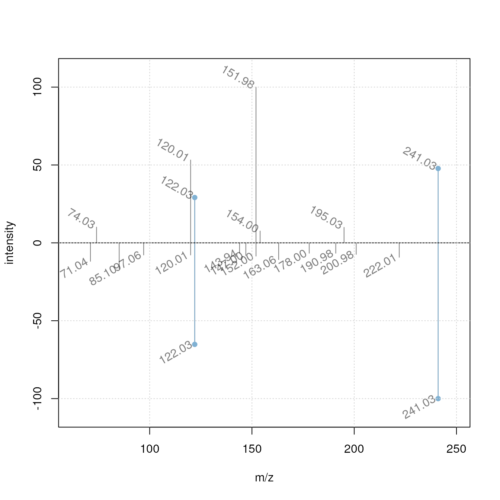

Seamless Integration of Mass Spectrometry Data from Different Sources with the Spectra Package
Johannes Rainer1, Michael Witting2, Sebastian Gibb3, Laurent Gatto4
Source:vignettes/analyzing-MS-data-from-different-sources-with-Spectra.Rmd
analyzing-MS-data-from-different-sources-with-Spectra.RmdLast modified: 2021-08-04 15:29:49
Compiled: Wed Aug 4 15:34:37 2021
Overview
Description
Mass spectrometry (MS) data is a key technology in modern proteomics and metabolomics experiments. Due to continuous improvements in MS instrumentation, the generated data can easily become very large. Also, additional resources of MS data exist, such as spectra libraries and databases, all with their own specific file formats and database systems that sometimes do not support manipulations of the original data.
Learning from experiences with the MSnbase Bioconductor package, the Spectra package was developed to provide an even more flexible and expandable infrastructure for MS data in R. This package implements a clear separation between the user interface and the code to provide, store and import MS data. The latter is defined by the MsBackend interface which thus allows implementation of data type, format or storage-dependent backends. Backends can thus be implemented for specific file types and data resources or different ways to represent MS data (e.g. in memory or on-disk data representations as described in (Gatto, Gibb, and Rainer 2020)). They are also supposed to be interchangeable hence allowing the user to switch backends without affecting the analysis. To enable processing of also very large MS data sets, data manipulations are by default not directly applied to the data but cached in a lazy evaluation queue which allows analyses also of read-only data representations.
This (instructor-led live demo) workshop shows the expandability of the new infrastructure to enable a seamless integration and analysis of MS data from a variety of input formats illustrated by a simple comparison and matching of experimental MS2 spectra against public spectral databases and export of the data in a format commonly used for exchange of MS2 data.
Pre-requisites
- Basic familiarity with R and Bioconductor.
- Basic understanding of Mass Spectrometry (MS) data.
Installation and Participation
Get the docker image of this tutorial with
docker pull jorainer/spectra_tutorials:latest.-
Start docker using
docker run \ -e PASSWORD=bioc \ -p 8787:8787 \ jorainer/spectra_tutorials:latest Enter
http://localhost:8787in a web browser and log in with usernamerstudioand passwordbioc.Open this R-markdown file (vignettes/analyzing-MS-data-from-different-sources-with-Spectra.Rmd) in the RStudio server version in the web browser and evaluate the R code blocks.
To get the source code: clone this github repository, e.g. with
git clone https://github.com/jorainer/SpectraTutorials.Optionally, to run also the code to import the MS2 spectra from HMDB the All Spectra Files (XML) archive from the hmdb downloads page has to be downloaded. The contents of the hmdb_all_spectra.zip archive should then be unzipped into the folder data/hmdb_all_spectra.
R/Bioconductor packages used
Other R packages not (yet) in Bioconductor:
Time outline
Time outline
| Activity | Time |
|---|---|
Introduction (LC-MS/MS, Spectra package) |
10min |
| MS data import and handling | 5min |
| Data processing and manipulation | 5min |
| Spectrum data comparison | 5min |
| Comparing spectra against MassBank | 10min |
| Data export | 5min |
| (Comparing spectra against HMDB) | (5min) |
Workshop goals and objectives
Learning goals
- Understand how to import MS data into R.
- Understand the basic concept of backends in
Spectraand how they can be used to work with MS data from various sources.
Learning objectives
- Import and export MS data with
Spectra. - Integrate MS data from different resources into an MS data analysis workflow.
- Apply different data manipulations on MS data represented as a
Spectraobject. - Use
Spectrato perform spectra comparisons in R.
Workshop
LC-MS/MS in a nutshell
- Mass spectrometry (MS) instruments measure mass-to-charge ratios (m/z) and abundances of ions. The resulting m/z and intensity values are stored/represented as a spectrum.
- Most compounds are not charged, they need to be ionized first (with e.g. electro spray ionization (ESI)).
- MS is usually combined with another separation technique, such as liquid chromatography (LC). This adds another dimension to the data: retention time (rt). For LC-MS data is represented by multiple spectra, each spectrum with its own retention time.
LC-MS setup
- With LC-MS we measure features characterized by m/z and retention time - we still don’t know what molecule was actually measured.
- Create in addition fragment (MS/MS) spectra from the ions to get some information about their structure.

CID-based fragmentation
- Commonly used method: collision induced dissociation (CID). In a collision chamber filled with e.g. N2, ions get fragmented and a spectrum of these fragments is recorded.
- Comparing and matching such fragment spectra against a reference helps identifying the compound.
The Spectra package
The Spectra package implements a clear separation between the user interface and the code to provide, store and read mass spectrometry data. Thus, different data or file format-specific backends can be implemented and directly plugged-in without affecting the way the user would access or analyze the data. This represents an extension to the in-memory and on-disk data modes already available in the MSnbase package that enabled either a fast data processing or an analysis of very large data sets by keeping only a limited amount of data in the computer’s memory (Gatto, Gibb, and Rainer 2020).

Spectra: separation into user functionality and data representation
In this workshop we will:
- import MS data from mzML files,
- select MS2 spectra for a certain compound,
- compare and match the MS2 spectra against reference MS2 spectra from a public database,
- annotate the spectra and export them to a file in MGF format.
MS data import and handling
Below we import the MS data from the mzML files provided within this package. These files contain MSn data of a mix of 8 standard compounds (added either to water or a pool of human serum samples) measured with a HILIC-based LC-MS/MS setup. MS2 data was generated by data dependent acquisition using a collision energy of 20eV. For data import and representation of these experimental data we use the MsBackendMzR backend which supports import (and export) of data from the most common raw mass spectrometry file formats (i.e. mzML, mzXML and CDF).
library(Spectra)
#' Define the input files
fls <- dir(system.file("mzML", package = "SpectraTutorials"),
full.names = TRUE)
#' Import the data
sps_all <- Spectra(fls, backend = MsBackendMzR())The MS data is now represented by a Spectra object, which can be thought of as a data.frame with rows being the individual spectra and columns the spectra variables (such as "rtime", i.e. the retention time). The spectraVariables function lists all available variables within such a Spectra object.
#' List all available spectra variables (attributes)
spectraVariables(sps_all)## [1] "msLevel" "rtime"
## [3] "acquisitionNum" "scanIndex"
## [5] "dataStorage" "dataOrigin"
## [7] "centroided" "smoothed"
## [9] "polarity" "precScanNum"
## [11] "precursorMz" "precursorIntensity"
## [13] "precursorCharge" "collisionEnergy"
## [15] "isolationWindowLowerMz" "isolationWindowTargetMz"
## [17] "isolationWindowUpperMz" "peaksCount"
## [19] "totIonCurrent" "basePeakMZ"
## [21] "basePeakIntensity" "ionisationEnergy"
## [23] "lowMZ" "highMZ"
## [25] "mergedScan" "mergedResultScanNum"
## [27] "mergedResultStartScanNum" "mergedResultEndScanNum"
## [29] "injectionTime" "filterString"
## [31] "spectrumId" "ionMobilityDriftTime"
## [33] "scanWindowLowerLimit" "scanWindowUpperLimit"Each spectra variable can be accessed either via $ and its name or by using its dedicated access function (which is the preferred way). Below we access the retention times of the first spectra using either $rtime or the function rtime.
#' Access the spectras' retention time
head(sps_all$rtime)## [1] 0.273 0.570 0.873 1.183 1.491 1.798## [1] 0.273 0.570 0.873 1.183 1.491 1.798Our Spectra object contains information from in total 1578 spectra from length(unique(dataOrigin(sps_all))) mzML files. By using the MsBackendMzR backend, only general information about each spectrum is kept in memory resulting in a low memory footprint.
print(object.size(sps_all), units = "MB")## 0.4 MbThe spectra’s m/z and intensity values can be accessed with the mz or intensity functions. By using an MsBackendMzR backend, these are retrieved on demand from the original data files each time the functions are called.
mz(sps_all)## NumericList of length 1578
## [[1]] 50.2264681118888 52.9758613330164 ... 998.412321909748 999.815483842029
## [[2]] 50.0188439310345 51.0188982589394 ... 994.093212059943 998.65669267328
## [[3]] 50.0188439310345 51.0260087879784 ... 999.549654921888 999.904649454908
## [[4]] 50.0347997547605 51.0271913631291 ... 984.467433193755 998.839380503321
## [[5]] 50.1615393614339 51.0280734441081 ... 996.599267645346 999.81102566575
## [[6]] 50.0158524973623 50.2809808965161 ... 992.93057113729 999.650537939432
## [[7]] 50.0178467765376 51.02704020796 ... 999.217711368357 999.757528325686
## [[8]] 50.0158524973623 51.0257255950236 ... 993.780890433629 999.583671855333
## [[9]] 50.0158524973623 50.9727348052523 ... 999.508971233846 999.663911424618
## [[10]] 50.0158524973623 50.0264589058649 ... 997.312177169353 999.672827131107
## ...
## <1568 more elements>We can also load the full data into memory by changing the backend from MsBackendMzR to MsBackendDataFrame. This does not affect the way we use the Spectra object itself: the same operations and functions are available, independently of the way the data is stored (i.e. which backend is used).
#' Change backend to a MsBackendDataFrame: load data into memory
sps_all <- setBackend(sps_all, MsBackendDataFrame())The size of our Spectra object is now larger, since the full data has been loaded into memory.
print(object.size(sps_all), units = "MB")## 16.5 MbTo subset Spectra objects, we can use either [ or one of the many available filter* functions (that are usually more efficient than [). We could this subset the sps_all to some arbitrary spectra simply using:
sps_all[c(4, 2, 5)]## MSn data (Spectra) with 3 spectra in a MsBackendDataFrame backend:
## msLevel rtime scanIndex
## <integer> <numeric> <integer>
## 1 1 1.183 4
## 2 1 0.570 2
## 3 1 1.491 5
## ... 33 more variables/columns.
## Processing:
## Switch backend from MsBackendMzR to MsBackendDataFrame [Wed Aug 4 15:34:43 2021]In our workshop, we next want to identify in our experimental data MS2 spectra that were generated from an ion that matches the m/z of the [M+H]+ ion of the metabolite cystine (one of the standards added to the sample mix measured in the present experimental data). We thus use below the filterPrecursorMz function to subset the data to MS2 spectra matching that m/z (accepting a difference in m/z of 10 parts-per-million (ppm)).
#' Define the m/z ratio for an ion of cystine
mz <- 241.0311
#' Subset the dataset to MS2 spectra matching the m/z
sps <- filterPrecursorMz(sps_all, mz = mz + ppm(c(-mz, mz), 10))
sps## MSn data (Spectra) with 6 spectra in a MsBackendDataFrame backend:
## msLevel rtime scanIndex
## <integer> <numeric> <integer>
## 1 2 209.936 673
## 2 2 220.072 714
## 3 2 231.604 734
## 4 2 215.089 761
## 5 2 225.739 781
## 6 2 240.020 804
## ... 33 more variables/columns.
## Processing:
## Switch backend from MsBackendMzR to MsBackendDataFrame [Wed Aug 4 15:34:43 2021]
## Filter: select spectra with a precursor m/z within [241.028689689, 241.033510311] [Wed Aug 4 15:34:44 2021]In total 6 spectra matched our target precursor m/z.
Data processing and manipulation
The plotSpectra function can be used to visualize spectra. Below we plot the first spectrum from our data subset.
#' Plot the first spectrum
plotSpectra(sps[1])
This raw MS2 spectrum contains many very low intensity peaks, most likely representing noise. Thus we next filter the spectra removing all peaks with an intensity smaller than 5% of the maximum intensity of each spectrum (i.e. the base peak intensity). To this end we define a function that takes intensity values from each spectrum as input and returns a logical value whether the peak should be retained (TRUE) or not (FALSE). This function is then passed to the filterIntensity function to perform the actual filtering of the spectra.
#' Define a filtering function
low_int <- function(x, ...) {
x > max(x, na.rm = TRUE) * 0.05
}
#' Apply the function to filter the spectra
sps <- filterIntensity(sps, intensity = low_int)After filtering, the spectra are cleaner:
#' Plot the first spectrum after filtering
plotSpectra(sps[1])In addition we normalize each spectrum replacing the absolute intensity values with values relative to the spectrum’s maximum intensity (which is set to 100). Also for this operation we define a function which takes a peak matrix as input and returns a matrix with the same dimensions. The peak matrix is the two-column matrix with m/z (first column) and intensity values (second column) representing the MS data of a spectrum. This function is then passed with parameter FUN to the addProcessing function which allows to apply any user-defined function to the peak matrix of each spectrum in a Spectra object. With this function Spectra thus provides a powerful framework to apply any user-defined data manipulation operation to MS data.
#' Define a function to *normalize* the intensities
norm_int <- function(x, ...) {
maxint <- max(x[, "intensity"], na.rm = TRUE)
x[, "intensity"] <- 100 * x[, "intensity"] / maxint
x
}
#' *Apply* the function to the data
sps <- addProcessing(sps, norm_int)To show the effect of the normalization we extract the intensities of the first spectrum:
#' Get the intensities after normalization
intensity(sps)[[1]]## [1] 13.439402 93.631648 49.287979 100.000000 9.422415 6.581111 12.969807
## [8] 54.633224The intensity values are now all between 0 and 100.
Spectrum data comparison
We next perform a pairwise comparison of the subsetted spectra using the dot product as similarity measure. Prior to the actual similarity calculation, the peaks of the individual spectra have to be matched against each other (i.e. it has to be determined which peak from one spectrum correspond to which from the other spectrum based on their mass-to-charge ratios). We specify ppm = 20 so that peaks with a difference in m/z smaller than 20ppm will be considered matching.
#' Pairwise comparison of all spectra
cormat <- compareSpectra(sps, ppm = 20)
cormat## [,1] [,2] [,3] [,4] [,5] [,6]
## [1,] 1.0000000 0.9717669 0.8907129 0.9721095 0.8795912 0.8818719
## [2,] 0.9717669 1.0000000 0.9992127 0.9964783 0.9525726 0.9486682
## [3,] 0.8907129 0.9992127 1.0000000 0.9947650 0.9518138 0.9478201
## [4,] 0.9721095 0.9964783 0.9947650 1.0000000 0.9543584 0.9494561
## [5,] 0.8795912 0.9525726 0.9518138 0.9543584 1.0000000 0.9994800
## [6,] 0.8818719 0.9486682 0.9478201 0.9494561 0.9994800 1.0000000The pairwise spectra similarities are represented with the heatmap below (note that RStudio in the docker might crash by the pheatmap call - to avoid this add filename = "hm.pdf" to the heatmap call).
The similarity between all the selected experimental MS2 spectra is very high (in fact above 0.88) suggesting all of them representing fragment spectra of the same compound.
Comparing spectra against MassBank
Although the precursor m/z of our spectra matches the m/z of cystine, we can still not exclude that they represent fragmentations of ions from different compounds (that would have the same precursor m/z than cystine).
Matching experimental spectra against a public spectral library can be used as a first step in the identification process. Several (public) spectral libraries for small molecules are available, such as:
For some of these databases MsBackend interfaces are already implemented allowing inclusion of their data directly into R-based analysis workflows. Access to MassBank data is for example possible with the r BiocStyle::Biocpkg("MsBackendMassbank") package. This package provides the MsBackendMassbank for import/export of MassBank files as well as the MsBackendMassbankSql backend that directly interfaces the MassBank MySQL database.
Below we load the MsBackendMassbank package and connect to a local installation of the MassBank MySQL database (release 2021.03 which is provided within the docker image of this tutorial).
library(RMariaDB)
library(MsBackendMassbank)
#' Connect to the MassBank MySQL database
con <- dbConnect(MariaDB(), user = "massbank", dbname = "MassBank",
host = "localhost", pass = "massbank")We can now initialize a Spectra object with a MsBackendMassbankSql backend to access all the data in MassBank.
#' Access the spectra data in MassBank
mbank <- Spectra(con, source = MsBackendMassbankSql())
mbank## MSn data (Spectra) with 86576 spectra in a MsBackendMassbankSql backend:
## msLevel precursorMz polarity
## <integer> <numeric> <integer>
## 1 2 506 0
## 2 NA NA 1
## 3 NA NA 0
## 4 NA NA 1
## 5 NA NA 0
## ... ... ... ...
## 86572 2 449.380 1
## 86573 2 426.022 0
## 86574 2 131.060 0
## 86575 2 183.170 1
## 86576 2 358.270 0
## ... 42 more variables/columns.
## Use 'spectraVariables' to list all of them.The Spectra object mbank represents now the MS data from the MassBank database with in total length(mbank) spectra. In fact, the mbank object itself does not contain any MS data, but only the primary keys of the spectra in the MassBank database. Hence, it has also a relatively low memory footprint.
print(object.size(mbank), units = "MB")## 6.6 MbAny operation on a Spectra object with this backend will load the requested data from the database on demand. Calling intensity on such a Spectra object would for example retrieve the intensity values for all spectra from the database.
#' Get intensity values for the first spectrum
intensity(mbank[1])## NumericList of length 1
## [["MCH00020"]] 0.980184 938.145447 56.718353 ... 2.051622 812.386597 1.093564As we can see, also MassBank provides absolute intensities for each spectrum. To have all the data on the same scale, we would however like to scale them to values between 0 and 100, just like we did for our experimental data. Below we thus apply the same data processing operation also to the MassBank Spectra object.
#' *Normalize* intensities for all MassBank spectra
mbank <- addProcessing(mbank, norm_int)
intensity(mbank[1])## NumericList of length 1
## [[1]] 0.00409025035453989 3.91482593798892 ... 0.00456337844599795This worked, although we are (for obvious reasons) not allowed to change the m/z and intensity values within the MassBank database. How is this then possible? It works, because any data manipulation operation on a Spectra object is cached within the object’s lazy evaluation queue and any such operation is applied to the m/z and intensity values on-the-fly whenever the data is requested (i.e. whenever mz or intensity is called on it). As a side effect, this also allows to undo certain data operations by simply calling reset on the Spectra object.
We next want to compare our experimental spectra against the spectra from MassBank. Instead of comparing against all 86576 available spectra, we first filter the MassBank database to spectra with a precursor m/z matching the one of the [M+H]+ ion of cystine. Note that, as an alternative to the filterPrecursorMz used below, we could also use the containsMz function to screen for spectra containing an actual peak matching the precursor m/z.
#' Filter MassBank for spectra of precursor ion
mbank_sub <- filterPrecursorMz(mbank, mz = mz + ppm(c(-mz, mz), 10))
mbank_sub## MSn data (Spectra) with 12 spectra in a MsBackendMassbankSql backend:
## msLevel precursorMz polarity
## <integer> <numeric> <integer>
## 1 2 241.031 1
## 2 2 241.031 1
## 3 2 241.031 1
## 4 2 241.031 1
## 5 2 241.031 1
## ... ... ... ...
## 8 2 241.031 1
## 9 2 241.031 1
## 10 2 241.031 1
## 11 2 241.031 1
## 12 2 241.031 1
## ... 42 more variables/columns.
## Use 'spectraVariables' to list all of them.
## Lazy evaluation queue: 1 processing step(s)
## Processing:
## Filter: select spectra with a precursor m/z within [241.028689689, 241.033510311] [Wed Aug 4 15:34:48 2021]This left us with 12 spectra for which we calculate the similarity against each of our experimental spectra using the compareSpectra function.
#' Compare MassBank subset to experimental spectra
res <- compareSpectra(mbank_sub, sps, ppm = 20)
res## [,1] [,2] [,3] [,4] [,5] [,6]
## RP014401 0.2026317 0.18071444 0.180198970 0.159611261 0.178432055 0.187159472
## RP014402 0.3343503 0.29331600 0.289277897 0.306782584 0.360811559 0.362983456
## RP014403 0.0246586 0.02144096 0.005165072 0.005668103 0.005392068 0.005564441
## CE000600 0.9021127 0.88638673 0.886268770 0.866622989 0.879227845 0.884905386
## CE000598 0.9069832 0.86557977 0.854177851 0.876050308 0.910186361 0.870563436
## CE000602 0.7714246 0.75079464 0.733570598 0.777097524 0.776174404 0.720059795
## CE000595 0.4711052 0.43073883 0.440694894 0.438244787 0.501664547 0.505248228
## CE000599 0.5101048 0.53045776 0.537988018 0.473824102 0.491324937 0.501360573
## CE000596 0.7358534 0.74158396 0.748032016 0.695780398 0.718522961 0.727849493
## CE000597 0.2843629 0.30699105 0.315713004 0.258086379 0.278344659 0.286485423
## CE000603 0.6267950 0.60792849 0.622025989 0.581961642 0.646976175 0.655418467
## CE000601 0.6085564 0.56699213 0.545861294 0.604958829 0.605503692 0.552365660As a result we got the (normalized dot product) similarity score between each tested MassBank spectrum (rows) against each experimental spectrum (columns).
pheatmap(res)
We get some very high similarity scores, but also some lower ones. We next determine the best matching pair from all the comparisons.
## row col
## CE000598 5 5The best_match variable contains now the index of the best matching MassBank and experimental spectrum. Below we visualize these two using a mirror plot showing in the upper panel the MS2 spectrum from MassBank and in the lower panel the best matching experimental spectrum. Matching peaks are highlighted with a blue color. Plotting functions in Spectra are highly customizable and in the example below we add the m/z for each individual peak as an annotation to it but only if the intensity of the peak is higher than 5.
#' Specifying a function to draw peak labels
label_fun <- function(x) {
ints <- unlist(intensity(x))
mzs <- format(unlist(mz(x)), digits = 4)
mzs[ints < 5] <- ""
mzs
}
plotSpectraMirror(mbank_sub[best_match[1]], sps[best_match[2]],
ppm = 20, labels = label_fun, labelPos = 2,
labelOffset = 0.2, labelSrt = -30)
grid()
As a comparison we plot also two spectra with a low similarity score.
plotSpectraMirror(mbank_sub[1], sps[3],
ppm = 20, labels = label_fun, labelPos = 2,
labelOffset = 0.2, labelSrt = -30)
grid()
Since we could identify a MassBank spectrum with a high similarity to our experimental spectra we would also like to know which compound this spectrum actually represents. Spectra objects are generally very flexible and can have arbitrarily many additional annotation fields (i.e. spectra variables) for each spectrum. Thus, we below use the spectraVariables function to list all of the variables that are available in our MassBank Spectra object.
#' What variables are available in MassBank
spectraVariables(mbank_sub)## [1] "msLevel" "rtime"
## [3] "acquisitionNum" "scanIndex"
## [5] "dataStorage" "dataOrigin"
## [7] "centroided" "smoothed"
## [9] "polarity" "precScanNum"
## [11] "precursorMz" "precursorIntensity"
## [13] "precursorCharge" "collisionEnergy"
## [15] "isolationWindowLowerMz" "isolationWindowTargetMz"
## [17] "isolationWindowUpperMz" "spectrum_id"
## [19] "spectrum_name" "date"
## [21] "authors" "license"
## [23] "copyright" "publication"
## [25] "splash" "compound_id"
## [27] "adduct" "ionization"
## [29] "ionization_voltage" "fragmentation_mode"
## [31] "collision_energy_text" "instrument"
## [33] "instrument_type" "formula"
## [35] "exactmass" "smiles"
## [37] "inchi" "inchikey"
## [39] "cas" "pubchem"
## [41] "synonym" "precursor_mz_text"
## [43] "compound_name"In fact, in addition to spectra specific information like the instrument on which it was measured or the ionization voltage used, we get also information on the originating compound such as its name ("compound_name"), its chemical formula ("formula") or its INChI key ("inchikey"). We thus next subset mbank_sub to the best matching spectrum and display its associated compound name.
mbank_best_match <- mbank_sub[best_match[1]]
mbank_best_match$compound_name## [1] "Cystine"Indeed, our experimental cystine spectrum matches (one) cystine spectrum in MassBank. Below we next add the name and the chemical formula of this spectrum to our experimental spectra. We also set the collision energy for to 20eV and assign the ion/adduct of cystine from which the reference spectrum was created.
#' Add annotations to the experimental spectra
sps$name <- mbank_best_match$compound_name
sps$formula <- mbank_best_match$formula
sps$adduct <- mbank_best_match$adduct
sps$collisionEnergy <- 20Note: a more convenient spectra matching functionality designed for less experienced R users is available in the MetaboAnnotation package.
Data export
At last we want to export our spectra to a file in MGF format. For this we use the MsBackendMgf package which provides the MsBackendMgf backend that adds support for MGF file import/export to Spectra objects.
Data from Spectra objects can generally be exported with the export function. The format in which the data is exported depends on the specified MsBackend class. By using an instance of MsBackendMgf we define to export the data to a file in MGF format.
library(MsBackendMgf)
#' Export the spectra to a MGF file
export(sps, backend = MsBackendMgf(), file = "Cystine_ce20.mgf")Comparing spectra against HMDB
In addition to the MsBackendMassbank, which provides access to MassBank data, there is also the MsBackendHmdb package supporting spectral data from the public Human Metabolome Database (HMDB). This package does however not yet provide direct access to the HMDB database but, through the MsBackendHmdbXml backend, allows to import MS2 spectra files in HMDB format. These are provided by HMDB as individual xml files in a custom file format which are bundled (and can hence be downloaded) in a single archive.
To reproduce the following code it is expected (as detailed in the Installation section) that all xml files from HMDB are available in a folder data/hmdb_all_spectra. Below we identify all xml files containing the key word "ms_ms" in their file name and load them into a Spectra object using the MsBackendHmdbXml backend. Note that this import operation from the ~ 500,000 individual xml files takes up to ~ 2 hours to finish.
library(MsBackendHmdb)
#' Get all MS2 spectra xml files and import data
fls <- dir("data/hmdb_all_spectra/", full.names = TRUE, pattern = "ms_ms")
hmdb <- Spectra(fls, source = MsBackendHmdbXml(), nonStop = TRUE)With this we have now a Spectra object containing all MS2 spectra from HMDB. Note that with the MsBackendHmdbXml all spectra data is kept in memory.
hmdb## MSn data (Spectra) with 458963 spectra in a MsBackendHmdbXml backend:
## msLevel rtime scanIndex
## <integer> <numeric> <integer>
## 1 2 NA NA
## 2 2 NA NA
## 3 2 NA NA
## 4 2 NA NA
## 5 2 NA NA
## ... ... ... ...
## 458959 2 NA NA
## 458960 2 NA NA
## 458961 2 NA NA
## 458962 2 NA NA
## 458963 2 NA NA
## ... 21 more variables/columns.Also here, we want to filter the data resource first for spectra with a matching precursor m/z. Unfortunately, HMDB does not provided the spectra’s precursor m/z and we hence need to used the containsMz function to find spectra containing a peak with an m/z matching the m/z of our ion of interest. In addition, We need to use a rather large tolerance value (which defines the maximal acceptable absolute difference in m/z values) since some of the experimental spectra in HMDB seem to be recorded by not well calibrated instrument.
#' Identify spectra containing a peak matching cystine m/z
has_mz <- containsMz(hmdb, mz = mz, tolerance = 0.2)In total 46772 spectra contain a peak with the required m/z (+/- 0.2 Dalton) and we can proceed to calculate spectral similarities between these and our experimental spectra.
#' Subset HMDB
hmdb_sub <- hmdb[has_mz]
#' Compare HMDB against experimental spectra
res <- compareSpectra(hmdb_sub, sps, tolerance = 0.2)The highest similarity between our spectra and the spectra from HMDB is r max(res). Below we compare the two best matching spectra with a mirror plot, in the upper panel showing our experimental spectrum and in the lower panel the best matching MS2 spectrum from HMDB.
best_match <- which(res == max(res), arr.ind = TRUE)
## Specifying a function to draw peak labels
label_fun <- function(x) {
format(unlist(mz(x)), digits = 4)
}
plotSpectraMirror(hmdb_sub[best_match[1]], sps[best_match[2]], tolerance = 0.2,
labels = label_fun, labelPos = 2, labelOffset = 0.2,
labelSrt = -30)
grid()
Our experimental spectrum seems to nicely match the reference MS2 in HMDB. Below we extract the compound identifier from the best matching HMDB spectrum (stored in a spectra variable called "compound_id")
hmdb_sub[best_match[1]]$compound_id## [1] "HMDB0000192"In fact, the matching spectrum from HMDB is an experimental spectrum for L-Cystine.
Short summary
Independence between data analysis and data storage functionality allows to easily add support for additional data types or data handling/storage modes.
Caching data operations and applying them on-the-fly allow data manipulations regardless of how and where data is stored.
Summary
With the simple use case of matching experimental MS2 spectra against a public database we illustrated in this short tutorial the flexibility and expandability of the Spectra package that enables the seamless integration of mass spectrometry data from different sources. This was only possible with a clear separation of the user functionality (Spectra object) from the representation of the data (MsBackend object). Backends such as the MsBackendMgf, the MsBackendMassbank or the MsBackendHmdbXml provide support for additional data formats or data sources, while others, due to their much lower memory footprint (MsBackendMzR, MsBackendHdf5Peaks), enable the analysis of also very large data sets. Most importantly however, these backends are interchangeable and do not affect the way users can handle and analyze MS data with the Spectra package. Also, by caching data operations within the Spectra object and applying them only upon data requests, the same data operations can be applied to any data resource regardless of how and where the data is stored, even if the data itself is read-only.
What else?
-
MetaboAnnotation(Andrea Vicini, Michael Witting) to provide simple functions for matching of spectra or m/z and retention time data. -
CompoundDbto create and use small compound annotation databases (includingSpectra). -
MsExperimentto represent whole MS experiments (incl.Spectra, sample annotation, data quantitation, annotation files etc). -
msQC(Thomas Naake): QC measures for MS data. -
MsBackendMsp(Steffen Neumann): backend for files in MSP format. -
MsBackendSql(Chong Tang): SQL-based backend for very large data sets. ...
References
Institute for Biomedicine, Eurac Research, Bolzano, Italy; johannes.rainer@eurac.edu↩︎
Research Unit Analytical BioGeoChemistry, Helmholtz Zentrum München and Chair of Analytical Food Chemistry, TUM School or Life Sciences, Technical University of Munich, Germany↩︎
Department of Anaesthesiology and Intensive Care, University Medicine Greifswald, Germany↩︎
Computational Biology Unit, de Duve Institute, UCLouvain, Brussels, Belgium↩︎